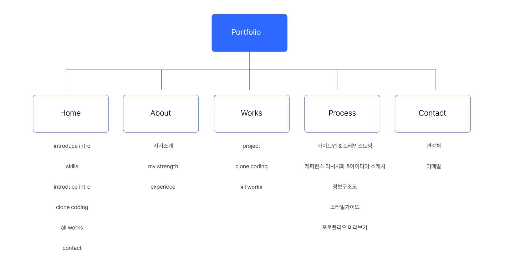
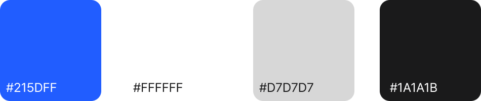

Portfolio Process
From small insights to structured experiences. I design with connection and clarity.
From small insights to structured experiences. I design with connection and clarity.
지금부터 저의 포토폴리오 제작과정을 소개합니다.

사이트 구성과 아이디어를 위해 작성한 마인드맵과 브래인스토밍 입니다.
여기다가는 간단한 설명을 적을 생각이야
get a feeling
해외 웹사이트 2곳을 참고하여 포트폴리오와 전반적인 프로세스를 레퍼런스를 활용하여 아이디어 스케치와 함께 구성하였습니다.

설계하여 메인페이지가 단순히 정적인 것이 아니라 동적이고 생동감 있는 느낌을 주도록 하였습니다.

이전에 브레인스토밍에서 도출한 대표적인 성격 키워들를 5가지를 골라 사용자의 스크롤 액션에 따라 화면에 성격 키워드가 순차적으로 나타나도록 하였습니다. 이를 통해 웹페이지에 생동감과 역동성을 더할 수 있습니다.
사이트 구성과 아이디어를 위해 작성한 마인드맵과 브래인스토밍 입니다.
포토폴리오의 전반적인 틀을 구상하기 위해 정보구조도를 작성하였습니다. home, about, works , portfolio process ,contact 5개의 큰 인덱스로 구성했습니다.

portfolio color 컨셉과 font에 대한 소개입니다.
깔끔한 인터페이스 구현을 위해 화이트 배경을 활용하였으며, 블루 컬러를 포인트 컬러로 적용하여 프레쉬한 분위기를 연출하였습니다.

깔끔한 인터페이스 구현을 위해 프리텐다드 폰트로 구현했습니다.
portfolio color 컨셉과 font에 대한 소개입니다.

CALL : 010-9421-6962
EMAILL : sungmi0131@naver.com
2026 portfolio
Kwak Sung Mi
PUBLISHER